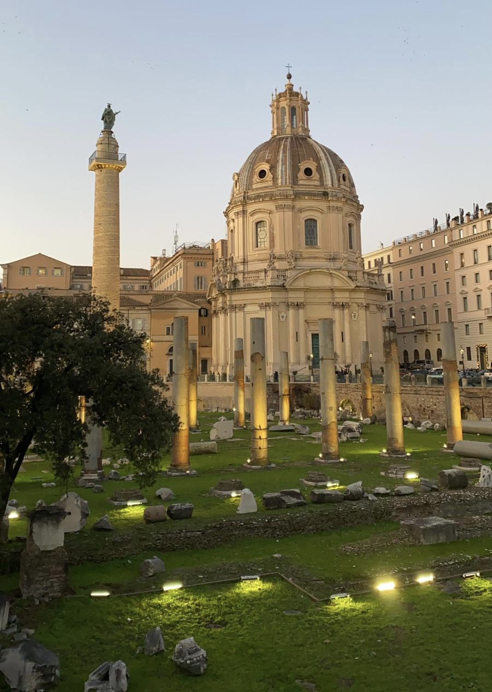

The beautiful city of Rome, the Roman Forum was once the religious and political heart of the empire. Today, it’s a series of fascinating ruins and arches sitting smack dab in the middle of downtown Rome, in Campitelli, not far from the Colosseum. You can stroll through Roman arches and see the ruins of ancient temples, shrines, and government buildings. It’s a bit hard to parse between the ruins, so consider joining a tour when visiting the Roman Forum on your Italy vacation. It’s the best way to discover the identity of the buildings and learn about the intriguing history of the area over the past 2000 years. It’s fascinating to visit the Roman Forum and comprehend how the heart of ancient Rome – and what was once a center of power in the ancient world – is now a series of stone ruins. It forces you to understand how even the mightiest of empires crumble.